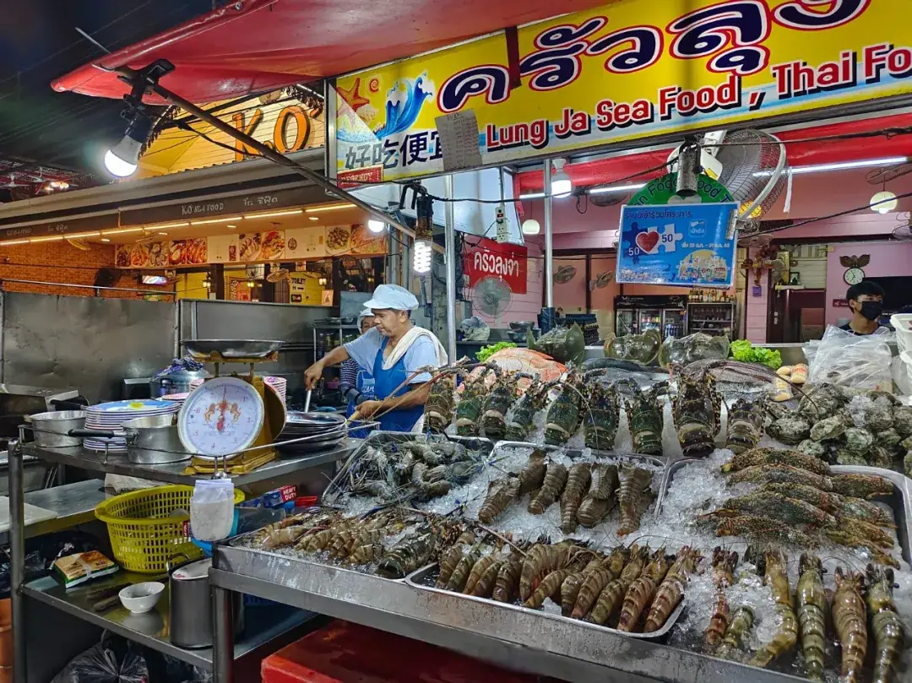

INTERVIEW-08
出海访谈 · OUTBOUND INTERVIEW
泰国：中国企业的东南亚本地化经营怎么落地？
Thailand: how to make local operations actually work?
曼谷血战者箴言 孤狼必死，织网者生。
一、市场基因
- 节奏：决策慢，回复迟
- 壁垒：行业限入，本土保护
- 合规：股东严查，资金冻结，税负重

二、机会切口
- 轻资产：贴牌优先，缓建厂
- 电商痛点：物流贵，清关难
- 潜力赛道：农业无人机、新能源车维修、企业IT化
三、地产红线
- 国籍锁：仅公寓，别墅代持
- 回报核心：小户型，游民租
- 风险提示：工业地产降温
四、东南亚天平
- 印尼：高潜高危，滞后五年
- 马来：市场割裂，本地化弱
- 泰国：平衡之选，保护觉醒
五、行动法则
- 资金：合规入境，拆解结汇
- 团队：华裔破壁，泰籍周旋
- 试错：小单探路，织网共生
“从中国走向全球”
出海行业访谈系列·第一期。和君丨海鑫汇丨出海班邀请具有出海经验的企业高管/实操者，分享企业全球化路径与挑战。
GTN 判断视角
泰国市场的"慢"不是缺陷，而是筛选机制——它天然把孤狼挡在门外，只留下愿意织网的人。轻资产贴牌、华裔破壁、泰籍周旋、小单试错，本质都是同一件事：用最低成本先把本地关系网织起来，再谈扩张。在东南亚，保护觉醒已成定局，"窄门破局"靠的不是冲劲，是耐心与本地共生。
本文内容整理自海鑫汇活动记录，首发于海鑫汇官方公众号（2025年7月）。 查看公众号原文 →
想给自己的出海路径"对号入座"？先做一次首诊判断。
预约首诊 →